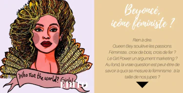
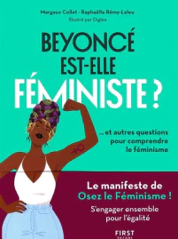

Découvrez le passé de nombreuses célébritées qui ont fait évoluer le féminisme. Voyagez à travers le temps pour comprendre davantage les inégalités présentes dans notre société.
A-t-on encore besoin du féminisme
Voir plusUn voyage dans le temps grâce à ces nombreuses féministes qui ont menés le combat pour l’égalité des femmes
Beyoncé est t-elle féministe
Voir plusUn livre écrit par deux militantes qui luttent pour l’égalité homme femme, retraçant toute probématique intéréssante concernant le féminisme.
Le féminisme de Beyoncé fait débat
Voir plusCet article vous informera sur le féminisme de Beyonce particulièrement critiqué, et vous permettera de remettre en question les différentes manières d’être féministe


Livre choisi “Beyonce est t-elle féministe Pour en apprendre davantage cliquez ici